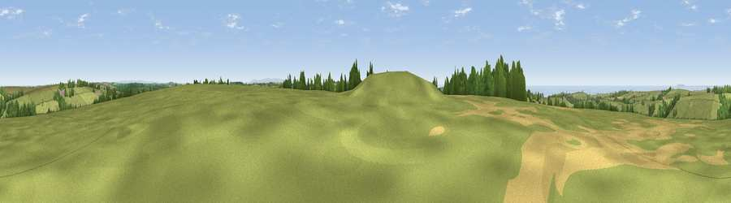

Viewpoint near Eastcott
#8899 in England · top 27% of its area beats it · near EastcottWhere it is
The exact computed spot (SS 25888 18275). Click the marker for map links.
The view, rendered

A 360° render of this exact spot computed from the terrain model, tree cover and land cover — summer colours, afternoon light, calibrated against photographs of famous viewpoints. Real trees, hedges and buildings will differ in detail.
The panorama
Grey silhouette: terrain skyline in each direction (720 bearings, Earth curvature and refraction included). Dashed green: skyline with trees (+15 m) and buildings (+8 m) as obstacles. Blue strip: how far the ground is visible on each bearing.
Where the view opens
Wedge length = distance to the farthest visible ground on that bearing (vegetation-aware). Rings at 10, 25 and 50 km.
What fills the view
73% grassland · 13% water · 9% woodland · 4% cropland
Angular shares of the visible panorama (visual magnitude), not map area. Landscape diversity 0.38 (0–1 Shannon).
Key numbers
More beautiful places nearby
The staircase of upgrades: each row has a higher view potential than everything closer. Driving times are estimates from straight-line distance, calibrated against real road routing — check an actual route before setting out.
| Place | Direction | Drive | Score |
|---|---|---|---|
| Bursdon Moor | NNE · 2 km | ~4 min | 68.0 |
| Embury Beacon | WNW · 4 km | ~10 min | 83.8 |
| Viewpoint near Bucks Mills | ENE · 13 km | ~24 min | 84.0 |
| Viewpoint near Crackington Haven | SSW · 27 km | ~43 min | 88.1 |
| Viewpoint near Combe Martin | NE · 45 km | ~65 min | 88.9 |
| Holdstone Hill | NE · 46 km | ~67 min | 90.2 |
| The Knoll | ESE · 131 km | ~155 min | 91.0 |
50.93757, -4.47944 · source: screening · position refined by local search. Computed location — check access rights before visiting.